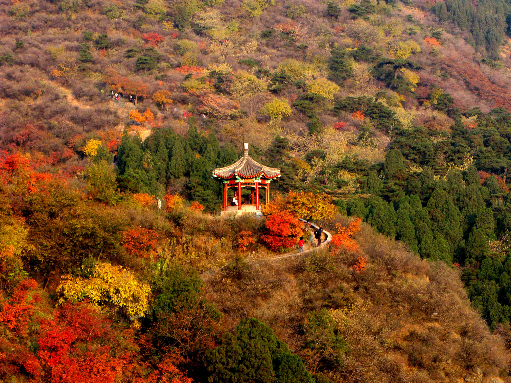
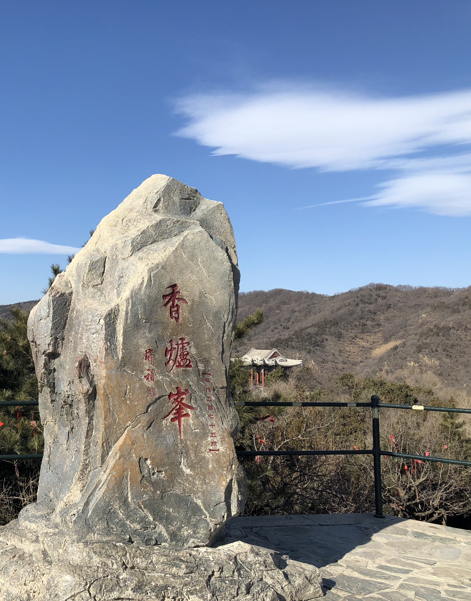
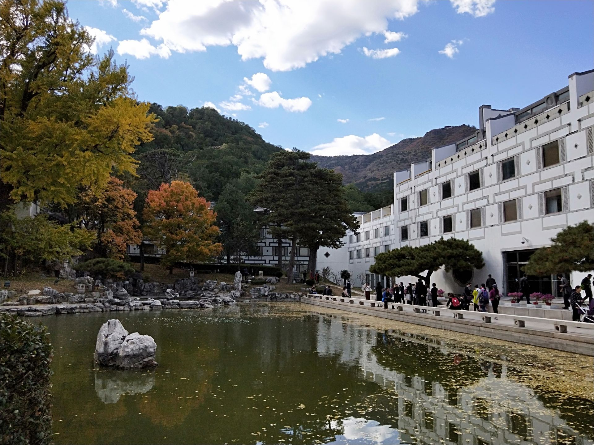
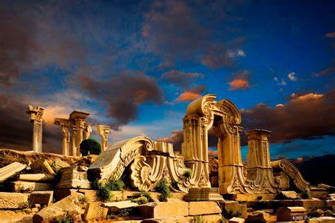
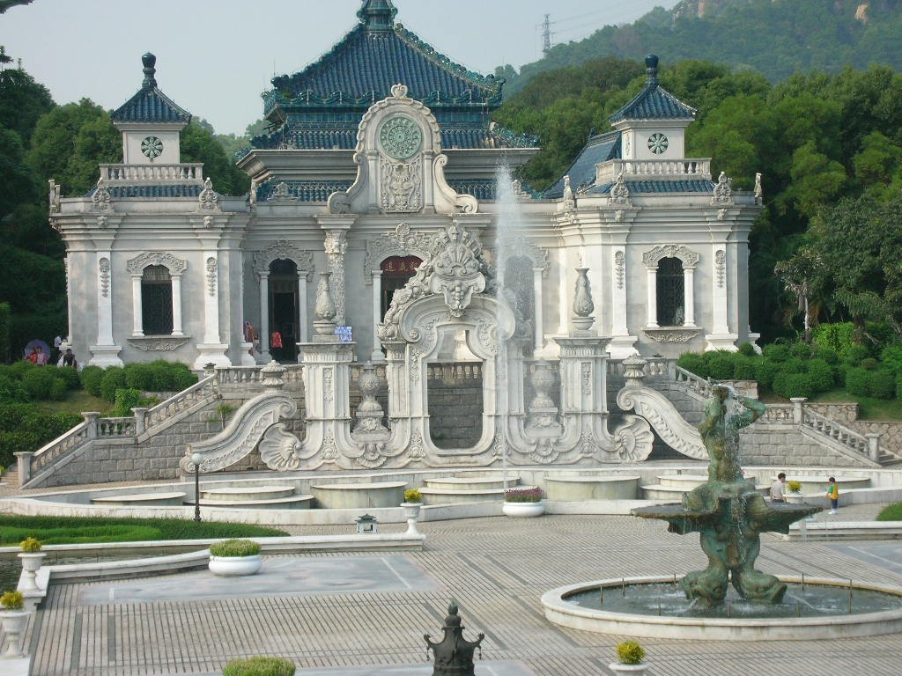
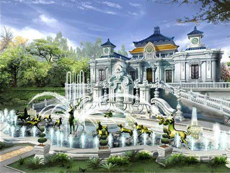

Fragrant Hills Park - Yuanmingyuan One Day Tour
Fragrant Hills Park
Located in the western suburbs of Beijing, Fragrant Hills Park is a royal garden with mountain and forest features, covering an area of 188 hectares and a history of nearly 900 years. It is a royal garden with mountain and forest characteristics. The main peak of the scenic spot is 575 metres above sea level. As early as in the Yuan, Ming and Qing dynasties, the royal family built a separate palace at Fragrant Hill, where the emperor would go hunting and cooling off in summer and autumn. It has been burnt down twice in 1860 and 1900 by the British and French allies and the Eight-Power Allied Forces, and was opened up as a people's park in 1956.
-  Fragrant Hills Park's Autumn
-  The Main Peak
-  Fragrant Hills Park
Yuanmingyuan
The Yuanmingyuan, also known as the Three Gardens of Yuanming, was a large royal palace in the Qing Dynasty, situated in the north-western suburbs of Beijing, adjacent to the Summer Palace, and consisting of the Yuanmingyuan, Changchunyuan and Wanchunyuan, hence the name Yuanming Three Gardens. In addition, there are many smaller gardens spread out to the east, west and south, surrounded by a star-like arch. The gardens cover an area of more than 350 hectares, with a floor space of 200,000 square metres and more than 150 views. The Qing Emperor came here every summer to escape the summer heat and deal with military and political affairs, hence the name "Summer Palace".
- 
- 
-  Restoration of the Yuanmingyuan
 330445074@qq.com
330445074@qq.com